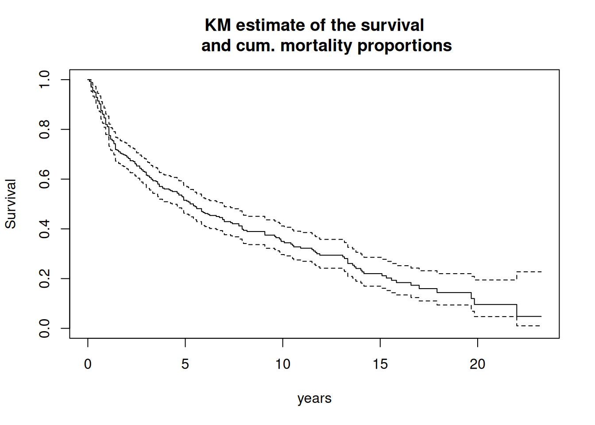
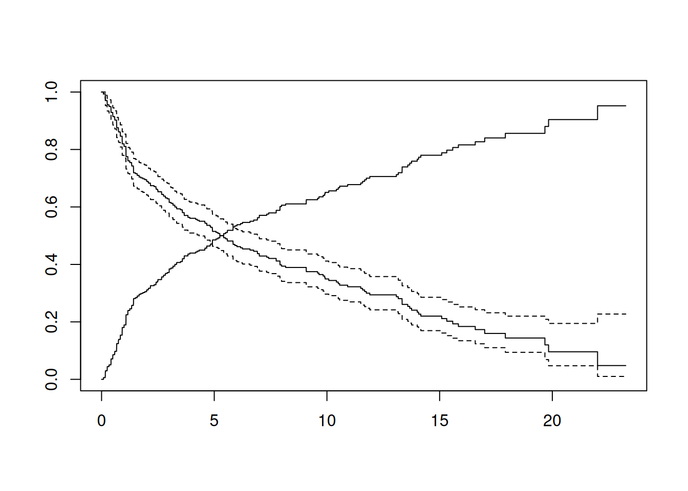
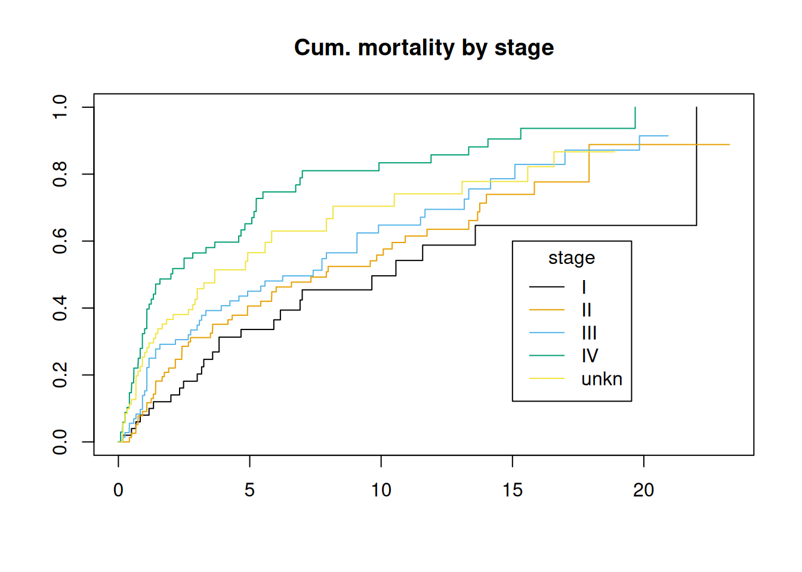
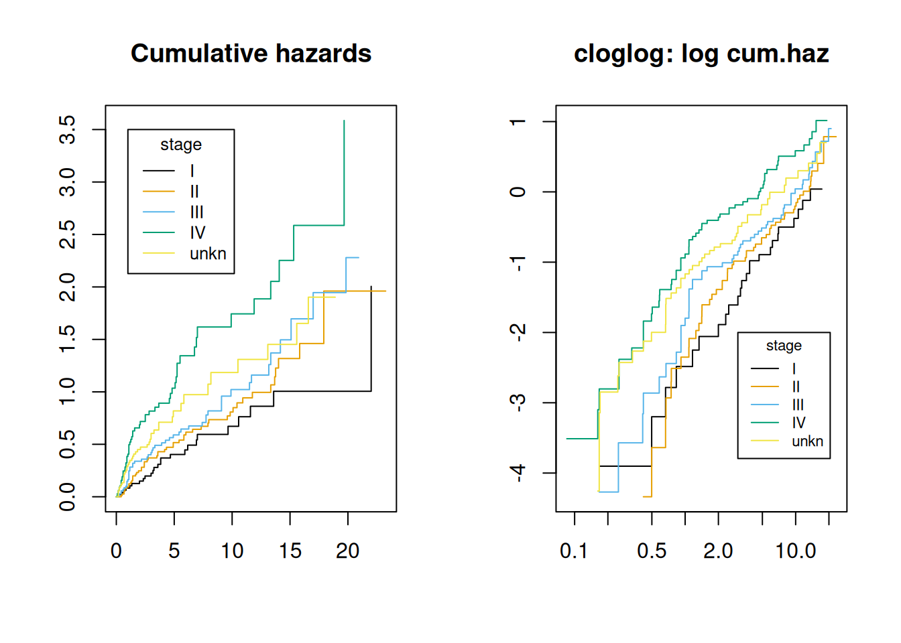
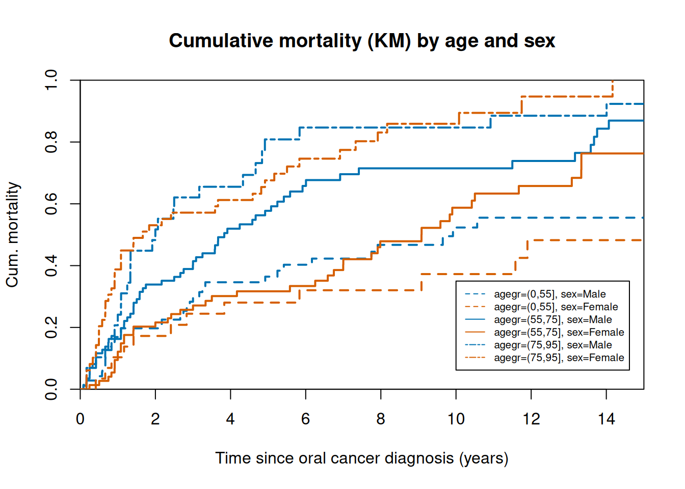
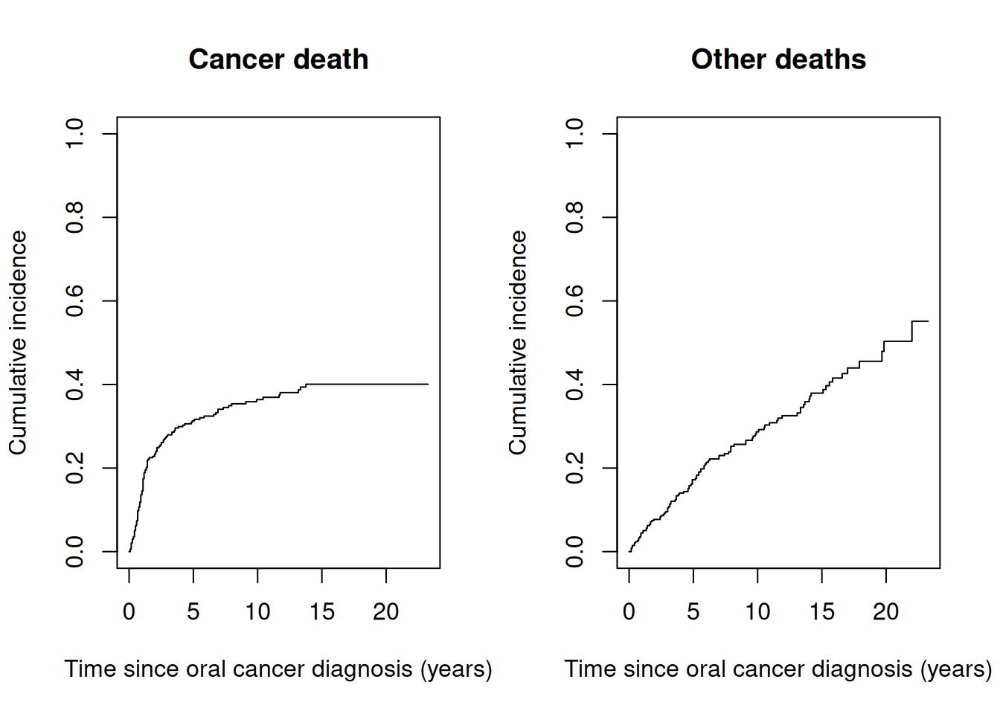
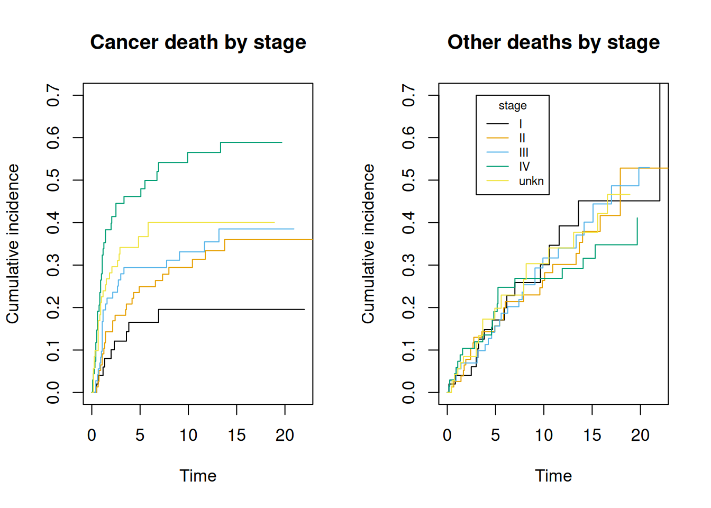
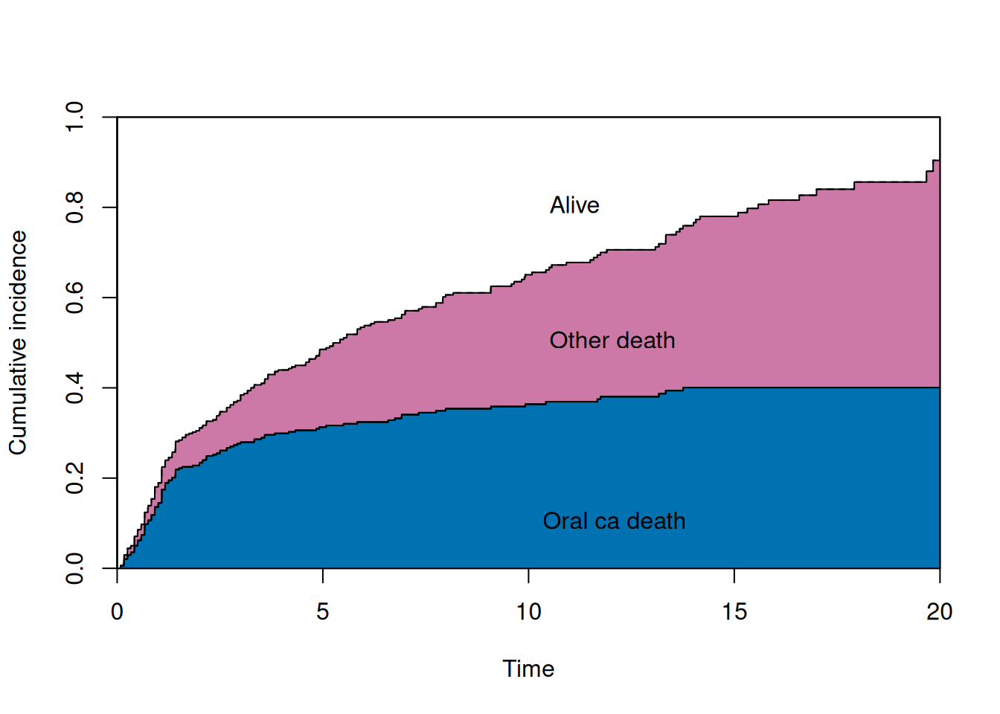
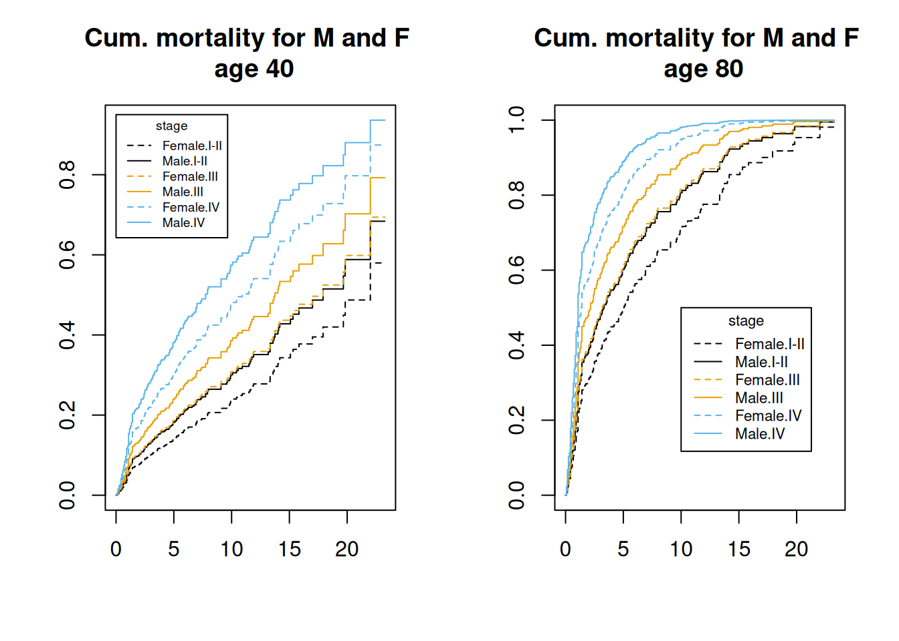
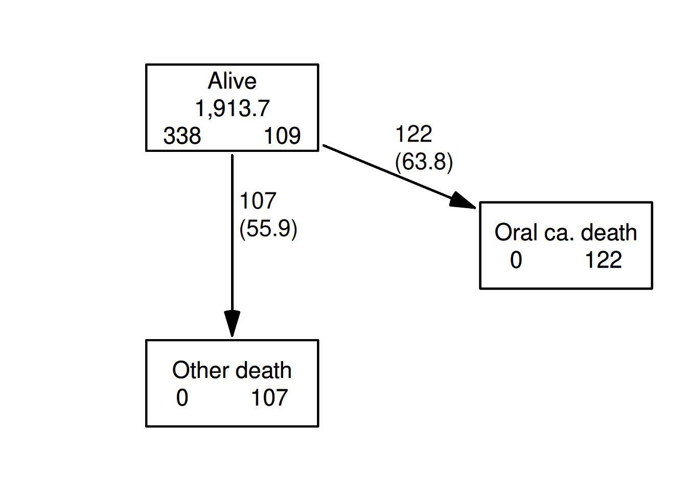

Chapter 11 Survival analysis with competing risks: Oral cancer patients
11.1 Description of the data
File oralca2.txt, that you may access from a url address to be given
in the practical, contains data from 338 patients having an oral
squamous cell carcinoma diagnosed and treated in one tertiary level
oncological clinic in Finland since 1985, followed-up for mortality
until 31 December 2008.
The dataset contains the following variables:
| Variable | Description |
|---|---|
sex |
sex, a factor with categories; 1 = "Female", 2 = "Male" |
age |
age (years) at the date of diagnosing the cancer |
stage |
TNM stage of the tumour (factor): 1 = "I", ..., 4 = "IV", 5 = "unkn" |
time |
follow-up time (in years) since diagnosis until death or censoring |
event |
event ending the follow-up (numeric): 0 = censoring alive, 1 = death from oral cancer, 2 = death from other causes. |
11.2 Loading the packages and the data
- Load the R packages
Epi, andsurvivalneeded in this exercise.
library(Epi)
library(survival)
cB8 <- c("#000000", "#E69F00", "#56B4E9", "#009E73",
"#F0E442", "#0072B2", "#D55E00", "#CC79A7") #colors chosen
options(digits=3)- Read the datafile
oralca2.txtfrom a website, whose precise address will be given in the practical, into an R data frame namedorca. Look at the head, structure and the summary of the data frame. Using functiontable()count the numbers of censorings as well as deaths from oral cancer and other causes, respectively, from theeventvariable.
orca <- read.table(file = 'https://raw.githubusercontent.com/SPE-R/SPE/master/pracs-book/data/oralca2.txt', header = TRUE, sep = " ",row.names = 1 )
head(orca)## sex age stage time event
## 1 Male 65.4 unkn 5.081 0
## 2 Female 83.1 III 0.419 1
## 3 Male 52.6 II 7.915 2
## 4 Male 77.1 I 2.480 2
## 5 Male 80.3 IV 2.500 1
## 6 Female 82.6 IV 0.167 2## 'data.frame': 338 obs. of 5 variables:
## $ sex : Factor w/ 2 levels "Male","Female": 1 2 1 1 1 2 1 1 2 1 ...
## $ age : num 65.4 83.1 52.6 77.1 80.3 ...
## $ stage: Factor w/ 5 levels "I","II","III",..: 5 3 2 1 4 4 2 5 4 2 ...
## $ time : num 5.081 0.419 7.915 2.48 2.5 ...
## $ event: int 0 1 2 2 1 2 0 1 1 0 ...## sex age stage time event
## Male :186 Min. :15.2 I :50 Min. : 0.085 Min. :0.000
## Female:152 1st Qu.:53.2 II :77 1st Qu.: 1.333 1st Qu.:0.000
## Median :64.9 III :72 Median : 3.869 Median :1.000
## Mean :63.5 IV :68 Mean : 5.662 Mean :0.994
## 3rd Qu.:74.3 unkn:71 3rd Qu.: 8.417 3rd Qu.:2.000
## Max. :92.2 Max. :23.258 Max. :2.00011.3 Total mortality: Kaplan–Meier analyses
- We start our analysis of total mortality pooling the two causes of
death into a single outcome. First, construct a survival object
orca$suobfrom the event variable and the follow-up time using functionSurv(). Look at the structure and summary ofsuob.
## 'Surv' num [1:338, 1:2] 5.081+ 0.419 7.915 2.480 2.500 0.167 5.925+ 1.503 13.333 7.666+ ...
## - attr(*, "dimnames")=List of 2
## ..$ : NULL
## ..$ : chr [1:2] "time" "status"
## - attr(*, "type")= chr "right"## time status
## Min. : 0.085 Min. :0.000
## 1st Qu.: 1.333 1st Qu.:0.000
## Median : 3.869 Median :1.000
## Mean : 5.662 Mean :0.678
## 3rd Qu.: 8.417 3rd Qu.:1.000
## Max. :23.258 Max. :1.000- Create a
survfitobjects.all, which does the default calculations for a Kaplan–Meier analysis of the overall (marginal) survival curve.
See the structure of this object and apply print() method on it, too.
Look at the results; what do you find?
## Call: survfit(formula = suob ~ 1, data = orca)
##
## n events median 0.95LCL 0.95UCL
## [1,] 338 229 5.42 4.33 6.92## List of 17
## $ n : int 338
## $ time : num [1:251] 0.085 0.162 0.167 0.17 0.246 0.249 0.252 0.329 0.334 0.413 ...
## $ n.risk : num [1:251] 338 336 334 330 328 327 326 323 322 321 ...
## $ n.event : num [1:251] 2 2 4 2 1 1 3 1 1 1 ...
## $ n.censor : num [1:251] 0 0 0 0 0 0 0 0 0 0 ...
## $ surv : num [1:251] 0.994 0.988 0.976 0.97 0.967 ...
## $ std.err : num [1:251] 0.0042 0.00595 0.00847 0.0095 0.00998 ...
## $ cumhaz : num [1:251] 0.00592 0.01187 0.02385 0.02991 0.03295 ...
## $ std.chaz : num [1:251] 0.00418 0.00593 0.00843 0.00946 0.00994 ...
## $ type : chr "right"
## $ logse : logi TRUE
## $ conf.int : num 0.95
## $ conf.type: chr "log"
## $ lower : num [1:251] 0.986 0.977 0.96 0.953 0.949 ...
## $ upper : num [1:251] 1 1 0.993 0.989 0.987 ...
## $ t0 : num 0
## $ call : language survfit(formula = suob ~ 1, data = orca)
## - attr(*, "class")= chr "survfit"- The
summarymethod for asurvfitobject would return a lengthy life table. However, theplotmethod with default arguments offers the Kaplan–Meier curve for a conventional illustration of the survival experience in the whole patient group. Alternatively, instead of graphing survival proportions, one can draw a curve describing their complements: the cumulative mortality proportions. This curve is drawn together with the survival curve as the result of the second command line below.
plot(s.all,main="KM estimate of the survival
and cum. mortality proportions",
xlab="years", ylab="Survival")

The effect of option mark.time=F is to omit marking the times when
censorings occurred.
11.4 Total mortality by stage
Tumour stage is an important prognostic factor in cancer survival.
stage I: cancer hasn’t spread to lymph nodes or other tissue (local),
stage II: cancer has grown but not spread
stage III:cancer has grown larger but not spread
stage IV cancer has spread to other organs or areasPlot separate cumulative mortality curves for the different stage groups marking them with different colors, the order which you may define yourself. Also find the median survival time for each stage.
s.stg <- survfit(suob ~ stage, data = orca)
col5 <- cB8[1:5]
plot(s.stg, col = col5, fun = "event", main="Cum. mortality by stage",mark.time = FALSE)
legend(15, 0.6, title="stage",legend=levels(orca$stage),col = col5,lty=rep(1,5))
- Create now two parallel plots of which the first one describes the cumulative hazards and the second one graphs the log-cumulative hazards against log-time for the different stages. Compare the two presentations with each other and with the one in the previous item.
par(mfrow = c(1, 2))
plot(s.stg, col = col5, fun = "cumhaz", main = "Cumulative hazards")
legend(1, 3.5, title="stage",legend=levels(orca$stage),col = col5,lty=rep(1,5), cex=0.8)
plot(s.stg, col = col5, fun = "cloglog",main = "cloglog: log cum.haz")
legend(3, -2, title="stage",legend=levels(orca$stage),col = col5,lty=rep(1,5), cex=0.7)
If the survival times were exponentially distributed in a given (sub)population the corresponding cloglog-curve should follow an approximately linear pattern. Could this be the case here in the different stages?
Also, if the survival distributions of the different subpopulations would obey the proportional hazards model, the vertical distance between the cloglog-curves should be approximately constant over the time axis. Do these curves indicate serious deviation from the proportional hazards assumption?
In the lecture handouts it was observed that the crude contrast between males and females in total mortality appears unclear, but the age-adjustment in the Cox model provided a more expected hazard ratio estimate. We shall examine the confounding by age somewhat closer. First categorize the continuous age variable into, say, three categories by function
cut()using suitable breakpoints, like 55 and 75 years, and cross-tabulate sex and age group:
orca$agegr <- cut(orca$age, br = c(0, 55, 75, 95))
stat.table(list(sex, agegr), list(count(), percent(agegr)),
margins = TRUE,
data = orca
)## -----------------------------------------
## --------------agegr--------------
## sex (0,55] (55,75] (75,95] Total
## -----------------------------------------
## Male 71 86 29 186
## 38.2 46.2 15.6 100.0
##
## Female 29 74 49 152
## 19.1 48.7 32.2 100.0
##
##
## Total 100 160 78 338
## 29.6 47.3 23.1 100.0
## -----------------------------------------Male patients are clearly younger than females in these data.
Now, plot Kaplan–Meier curves jointly classified by sex and age.
s.agrx <- survfit(suob ~ agegr + sex, data=orca)
par(mfrow=c(1,1))
plot(s.agrx, fun="event", main="Cumulative mortality (KM) by age and sex",xlab="Time since oral cancer diagnosis (years)",ylab="Cum. mortality",mark.time=F, xlim = c(0,15), lwd=2,
col=rep(c(cB8[6], cB8[7]),3), lty=c(2,2, 1,1, 6,6),
xaxs="i",yaxs="i")
legend(10,0.35, legend=names(s.agrx$strata),
col=rep(c(cB8[6], cB8[7]),3), lty=c(2,2, 1,1, 6,6),cex=0.65)
In each age band the mortality curve for males is on a higher level than that for females.
11.5 Event-specific cumulative mortality curves
We move on to analysing cumulative mortalities for the two causes of death separately, first overall and then by prognostic factors.
- Use the
survfit-function insurvivalpackage with optiontype="mstate".
## Warning in Surv(time, event, type = "mstate"): type= 'mstate' is deprecated,
## use a factor variable as status## List of 23
## $ n : int 338
## $ time : num [1:251] 0.085 0.162 0.167 0.17 0.246 0.249 0.252 0.329 0.334 0.413 ...
## $ n.risk : num [1:251, 1:3] 338 336 334 330 328 327 326 323 322 321 ...
## ..- attr(*, "dimnames")=List of 2
## .. ..$ : NULL
## .. ..$ : chr [1:3] "(s0)" "1" "2"
## $ n.event : num [1:251, 1:3] 0 0 0 0 0 0 0 0 0 0 ...
## ..- attr(*, "dimnames")=List of 2
## .. ..$ : NULL
## .. ..$ : chr [1:3] "(s0)" "1" "2"
## $ n.censor : num [1:251, 1:3] 0 0 0 0 0 0 0 0 0 0 ...
## ..- attr(*, "dimnames")=List of 2
## .. ..$ : NULL
## .. ..$ : chr [1:3] "(s0)" "1" "2"
## $ pstate : num [1:251, 1:3] 0.994 0.988 0.976 0.97 0.967 ...
## ..- attr(*, "dimnames")=List of 2
## .. ..$ : NULL
## .. ..$ : chr [1:3] "(s0)" "1" "2"
## $ n.transition: num [1:251, 1:2] 2 2 2 1 1 0 2 1 1 1 ...
## ..- attr(*, "dimnames")=List of 2
## .. ..$ : NULL
## .. ..$ : chr [1:2] "1:2" "1:3"
## $ n.id : int 338
## $ cumhaz : num [1:251, 1:2] 0.00592 0.01187 0.01786 0.02089 0.02394 ...
## ..- attr(*, "dimnames")=List of 2
## .. ..$ : NULL
## .. ..$ : chr [1:2] "1:2" "1:3"
## $ p0 : Named num [1:3] 1 0 0
## ..- attr(*, "names")= chr [1:3] "(s0)" "1" "2"
## $ std.err : num [1:251, 1:3] 0.00417 0.00588 0.00827 0.00922 0.00965 ...
## $ std.chaz : num [1:251, 1:2] 0.00417 0.00592 0.00727 0.00787 0.00844 ...
## $ std.auc : num [1:251, 1:3] 0 0.000321 0.000343 0.000356 0.000934 ...
## $ logse : logi FALSE
## $ transitions : 'table' int [1:3, 1:3] 122 0 0 107 0 0 109 0 0
## ..- attr(*, "dimnames")=List of 2
## .. ..$ from: chr [1:3] "(s0)" "1" "2"
## .. ..$ to : chr [1:3] "1" "2" "(censored)"
## $ lower : num [1:251, 1:3] 0.986 0.977 0.96 0.953 0.949 ...
## ..- attr(*, "dimnames")=List of 2
## .. ..$ : NULL
## .. ..$ : chr [1:3] "(s0)" "1" "2"
## $ upper : num [1:251, 1:3] 1 1 0.993 0.989 0.987 ...
## ..- attr(*, "dimnames")=List of 2
## .. ..$ : NULL
## .. ..$ : chr [1:3] "(s0)" "1" "2"
## $ conf.type : chr "log"
## $ conf.int : num 0.95
## $ states : chr [1:3] "(s0)" "1" "2"
## $ type : chr "mright"
## $ t0 : num 0
## $ call : language survfit(formula = Surv(time, event, type = "mstate") ~ 1, data = orca)
## - attr(*, "class")= chr [1:2] "survfitms" "survfit"- One could apply here the plot method of the survfit object to plot the
cumulative incidences for each cause. However, we suggest that you use
instead a simple function
plotCIF()found in theEpipackage. The main arguments are
data |
data frame created by function }survfit() |
event |
indicator for the event: values 1 or 2. |
Other arguments are like in the ordinary plot() function.
- Draw two parallel plots describing the overall cumulative incidence curves for both causes of death
par(mfrow = c(1, 2))
plotCIF(cif1, 1, main = "Cancer death",xlab="Time since oral cancer diagnosis (years)")
plotCIF(cif1, 2, main = "Other deaths",xlab="Time since oral cancer diagnosis (years)")
- Compute the estimated cumulative incidences by stage for both causes
of death. Now you have to add variable
stageto survfit-function.
See the structure of the resulting object, in which you should observe strata variable containing the stage grouping variable. Plot the pertinent curves in two parallel graphs. Cut the \(y\)-axis for a more efficient graphical presentation
## Warning in Surv(time, event, type = "mstate"): type= 'mstate' is deprecated,
## use a factor variable as status## List of 24
## $ n : int [1:5] 50 77 72 68 71
## $ time : num [1:307] 0.17 0.498 0.665 0.832 1.166 ...
## $ n.risk : num [1:307, 1:3] 50 49 48 47 46 45 44 43 42 41 ...
## ..- attr(*, "dimnames")=List of 2
## .. ..$ : NULL
## .. ..$ : chr [1:3] "(s0)" "1" "2"
## $ n.event : num [1:307, 1:3] 0 0 0 0 0 0 0 0 0 0 ...
## ..- attr(*, "dimnames")=List of 2
## .. ..$ : NULL
## .. ..$ : chr [1:3] "(s0)" "1" "2"
## $ n.censor : num [1:307, 1:3] 0 0 0 0 0 0 1 0 0 0 ...
## ..- attr(*, "dimnames")=List of 2
## .. ..$ : NULL
## .. ..$ : chr [1:3] "(s0)" "1" "2"
## $ pstate : num [1:307, 1:3] 0.98 0.96 0.94 0.92 0.9 ...
## ..- attr(*, "dimnames")=List of 2
## .. ..$ : NULL
## .. ..$ : chr [1:3] "(s0)" "1" "2"
## $ n.transition: num [1:307, 1:2] 0 1 1 0 1 1 0 1 1 0 ...
## ..- attr(*, "dimnames")=List of 2
## .. ..$ : NULL
## .. ..$ : chr [1:2] "1:2" "1:3"
## $ n.id : int [1:5] 50 77 72 68 71
## $ cumhaz : num [1:307, 1:2] 0 0.0204 0.0412 0.0412 0.063 ...
## ..- attr(*, "dimnames")=List of 2
## .. ..$ : NULL
## .. ..$ : chr [1:2] "1:2" "1:3"
## $ p0 : num [1:5, 1:3] 1 1 1 1 1 0 0 0 0 0 ...
## ..- attr(*, "dimnames")=List of 2
## .. ..$ : chr [1:5] "stage=I" "stage=II" "stage=III" "stage=IV" ...
## .. ..$ : chr [1:3] "(s0)" "1" "2"
## $ strata : Named int [1:5] 49 75 62 58 63
## ..- attr(*, "names")= chr [1:5] "stage=I" "stage=II" "stage=III" "stage=IV" ...
## $ std.err : num [1:307, 1:3] 0.0198 0.0277 0.0336 0.0384 0.0424 ...
## $ std.chaz : num [1:307, 1:2] 0 0.0202 0.0289 0.0289 0.036 ...
## $ std.auc : num [1:307, 1:3] 0 0.00649 0.01028 0.01484 0.02589 ...
## $ logse : logi FALSE
## $ transitions : 'table' int [1:3, 1:3] 122 0 0 107 0 0 109 0 0
## ..- attr(*, "dimnames")=List of 2
## .. ..$ from: chr [1:3] "(s0)" "1" "2"
## .. ..$ to : chr [1:3] "1" "2" "(censored)"
## $ lower : num [1:307, 1:3] 0.942 0.907 0.876 0.848 0.821 ...
## ..- attr(*, "dimnames")=List of 2
## .. ..$ : NULL
## .. ..$ : chr [1:3] "(s0)" "1" "2"
## $ upper : num [1:307, 1:3] 1 1 1 0.998 0.987 ...
## ..- attr(*, "dimnames")=List of 2
## .. ..$ : NULL
## .. ..$ : chr [1:3] "(s0)" "1" "2"
## $ conf.type : chr "log"
## $ conf.int : num 0.95
## $ states : chr [1:3] "(s0)" "1" "2"
## $ type : chr "mright"
## $ t0 : num 0
## $ call : language survfit(formula = Surv(time, event, type = "mstate") ~ stage, data = orca)
## - attr(*, "class")= chr [1:2] "survfitms" "survfit"par(mfrow = c(1, 2))
plotCIF(cif2, 1,
main = "Cancer death by stage",
col = col5, ylim = c(0, 0.7)
)
plotCIF(cif2, 2,
main = "Other deaths by stage",
col = col5, ylim = c(0, 0.7)
)
legend(3, 0.7, title="stage",legend=levels(orca$stage),col = col5,lty=rep(1,5), cex=0.7)
Compare the two plots. What would you conclude about the effect of stage on the two causes of death?
- Using another function
stackedCIF()inEpiyou can put the two cumulative incidence curves in one graph but stacked upon one another such that the lower curve is for the cancer deaths and the upper curve is for total mortality, and the vertical difference between the two curves describes the cumulative mortality from other causes. You can also add some colours for the different zones:
par(mfrow=c(1,1),xaxs="i", yaxs="i") # make plot start 0,0
stackedCIF(cif1,xlim=c(0,20),
col = c("black"),
fill=c(cB8[6],cB8[8],cB8[2])) #choosing some colors
text( 10, 0.10, "Oral ca death ", pos = 4)
text( 10, 0.5, " Other death ", pos = 4)
text( 10, 0.80, " Alive ", pos = 4)
11.6 Regression modelling of overall mortality.
- Fit the semiparametric proportional hazards regression model, a.k.a.
the Cox model, on all deaths including sex, age and stage as
covariates. Use function
coxph()in packagesurvival. It is often useful to center and scale continuous covariates likeagehere. The estimated rate ratios and their confidence intervals can also here be displayed by applyingci.lin()on the fitted model object.
options(show.signif.stars = FALSE)
m1 <- coxph(suob ~ sex + I((age - 65) / 10) + stage, data = orca)
summary(m1)## Call:
## coxph(formula = suob ~ sex + I((age - 65)/10) + stage, data = orca)
##
## n= 338, number of events= 229
##
## coef exp(coef) se(coef) z Pr(>|z|)
## sexFemale -0.3514 0.7037 0.1414 -2.49 0.01295
## I((age - 65)/10) 0.4160 1.5159 0.0564 7.37 1.6e-13
## stageII 0.0349 1.0355 0.2467 0.14 0.88742
## stageIII 0.3454 1.4126 0.2457 1.41 0.15971
## stageIV 0.8854 2.4240 0.2427 3.65 0.00026
## stageunkn 0.5844 1.7939 0.2512 2.33 0.02002
##
## exp(coef) exp(-coef) lower .95 upper .95
## sexFemale 0.704 1.421 0.533 0.928
## I((age - 65)/10) 1.516 0.660 1.357 1.693
## stageII 1.036 0.966 0.639 1.679
## stageIII 1.413 0.708 0.873 2.286
## stageIV 2.424 0.413 1.506 3.901
## stageunkn 1.794 0.557 1.096 2.935
##
## Concordance= 0.674 (se = 0.02 )
## Likelihood ratio test= 86.8 on 6 df, p=<2e-16
## Wald test = 80.5 on 6 df, p=3e-15
## Score (logrank) test = 82.9 on 6 df, p=9e-16## exp(Est.) 2.5% 97.5%
## sexFemale 0.704 0.533 0.928
## I((age - 65)/10) 1.516 1.357 1.693
## stageII 1.036 0.639 1.679
## stageIII 1.413 0.873 2.286
## stageIV 2.424 1.506 3.901
## stageunkn 1.794 1.096 2.935Look at the results. What are the main findings?
- Check whether the data are sufficiently consistent with the assumption
of proportional hazards with respect to each of the variables
separately as well as globally, using the
cox.zph()function.
## chisq df p
## sex 0.275 1 0.60
## I((age - 65)/10) 1.706 1 0.19
## stage 3.648 4 0.46
## GLOBAL 5.144 6 0.53- No evidence against proportionality assumption could apparently be found. Moreover, no difference can be observed between stages I and II in the estimates. On the other hand, the group with stage unknown is a complex mixture of patients from various true stages. Therefore, it may be prudent to exclude these subjects from the data and to pool the first two stage groups into one. After that fit a model in the reduced data with the new stage variable.
orca2 <- subset(orca, stage != "unkn")
orca2$st3 <- Relevel(orca2$stage, list(1:2, 3, 4:5))
levels(orca2$st3) <- c("I-II", "III", "IV")
m2 <- coxph(Surv(orca2$time, 1 * (orca2$event > 0)) ~ sex + I((age - 65) / 10) + st3, data = orca2)
summary(m2)## Call:
## coxph(formula = Surv(orca2$time, 1 * (orca2$event > 0)) ~ sex +
## I((age - 65)/10) + st3, data = orca2)
##
## n= 267, number of events= 184
##
## coef exp(coef) se(coef) z Pr(>|z|)
## sexFemale -0.2839 0.7528 0.1571 -1.81 0.071
## I((age - 65)/10) 0.3810 1.4637 0.0622 6.13 8.8e-10
## st3III 0.3117 1.3657 0.1827 1.71 0.088
## st3IV 0.8713 2.3900 0.1786 4.88 1.1e-06
##
## exp(coef) exp(-coef) lower .95 upper .95
## sexFemale 0.753 1.328 0.553 1.02
## I((age - 65)/10) 1.464 0.683 1.296 1.65
## st3III 1.366 0.732 0.955 1.95
## st3IV 2.390 0.418 1.684 3.39
##
## Concordance= 0.673 (se = 0.022 )
## Likelihood ratio test= 64.8 on 4 df, p=3e-13
## Wald test = 62.3 on 4 df, p=1e-12
## Score (logrank) test = 64.3 on 4 df, p=4e-13## exp(Est.) 2.5% 97.5%
## sexFemale 0.753 0.553 1.02
## I((age - 65)/10) 1.464 1.296 1.65
## st3III 1.366 0.955 1.95
## st3IV 2.390 1.684 3.39- Plot the predicted cumulative mortality curves by stage, jointly
stratified by sex and age, focusing only on 40 and 80 year old
patients, respectively, based on the fitted model
m2. You need to create a new artificial data frame containing the desired values for the covariates.
newd <- data.frame(
sex = c(rep("Male", 6), rep("Female", 6)),
age = rep(c(rep(40, 3), rep(80, 3)), 2),
st3 = rep(levels(orca2$st3), 4)
)
newd## sex age st3
## 1 Male 40 I-II
## 2 Male 40 III
## 3 Male 40 IV
## 4 Male 80 I-II
## 5 Male 80 III
## 6 Male 80 IV
## 7 Female 40 I-II
## 8 Female 40 III
## 9 Female 40 IV
## 10 Female 80 I-II
## 11 Female 80 III
## 12 Female 80 IVcol3 <- cB8[1:3] #pre-setting color palette
leg<-levels(interaction(levels(factor(orca2$sex)),levels(orca2$st3))) #legend labels by sex and stage## Warning in ay * as.numeric(nx) + ax: longer object length is not a multiple of
## shorter object lengthpar(mfrow = c(1, 2))
plot(
survfit(m2, newdata = subset(newd, sex == "Male" & age == 40)),
col = col3,
lty= 1,
fun = "event", mark.time = FALSE,
main="Cum. mortality for M and F \n age 40"
)
lines(
survfit(m2, newdata = subset(newd, sex == "Female" & age == 40)),
col = col3, lty=c(2,2,2),fun = "event", mark.time = FALSE
)
legend(0, 0.95, title="stage",legend=leg,
col = c(col3[1],col3[1],col3[2],col3[2],col3[3],col3[3]),
,lty=c(2,1,2,1,2,1), cex=0.6)
plot(
survfit(m2, newdata = subset(newd, sex == "Male" & age == 80)),
ylim = c(0, 1), col = col3, fun = "event", mark.time = FALSE,
main="Cum. mortality for M and F \n age 80"
)
lines(
survfit(m2, newdata = subset(newd, sex == "Female" & age == 80) ),
col = col3, fun = "event", lty = 2, mark.time = FALSE
)
legend(10, 0.5, title="stage",legend=leg,
col = c(col3[1],col3[1],col3[2],col3[2],col3[3],col3[3]),
,lty=c(2,1,2,1,2,1), cex=0.7)
11.7 Modelling event-specific hazards
- Fit the Cox model for the cause-specific hazard of cancer deaths with the same covariates as above. In this case only cancer deaths are counted as events and deaths from other causes are included into censorings.
m2haz1 <-
coxph(
Surv(time, event == 1) ~ sex + I((age - 65) / 10) + st3,
data = orca2
)
round(ci.exp(m2haz1), 4)## exp(Est.) 2.5% 97.5%
## sexFemale 0.983 0.642 1.51
## I((age - 65)/10) 1.426 1.204 1.69
## st3III 1.514 0.901 2.54
## st3IV 3.181 1.985 5.10## chisq df p
## sex 0.0724 1 0.788
## I((age - 65)/10) 5.7620 1 0.016
## st3 3.4195 2 0.181
## GLOBAL 9.1216 4 0.058Compare the results with those of model m2. What are the major
differences?
- Fit a similar model for deaths from other causes and compare the results.
m2haz2 <-
coxph(
Surv(time, event == 2) ~ sex + I((age - 65) / 10) + st3,
data = orca2
)
round(ci.exp(m2haz2), 4)## exp(Est.) 2.5% 97.5%
## sexFemale 0.552 0.352 0.868
## I((age - 65)/10) 1.488 1.249 1.772
## st3III 1.230 0.749 2.021
## st3IV 1.641 0.952 2.827## chisq df p
## sex 0.4071 1 0.52
## I((age - 65)/10) 0.2435 1 0.62
## st3 0.0443 2 0.98
## GLOBAL 0.6444 4 0.9611.8 Lexis object with multi-state set-up
Before entering to multi-state analyses, it might be instructive to apply some Lexis tools to illustrate the competing-risks set-up. More detailed explanation of these tools will be given by Bendix later.
- Form a
Lexisobject from the data frame and print a summary of it. We shall name the main (and only) time axis in this object asstime.
orca.lex <- Lexis(
exit = list(stime = time),
exit.status = factor(event,
labels = c("Alive", "Oral ca. death", "Other death")
),
data = orca
)## NOTE: entry.status has been set to "Alive" for all.
## NOTE: entry is assumed to be 0 on the stime timescale.##
## Transitions:
## To
## From Alive Oral ca. death Other death Records: Events: Risk time: Persons:
## Alive 109 122 107 338 229 1914 338- Draw a box diagram of the two-state set-up of competing transitions. Run first th e following command line

Now, move the cursor to the point in the graphics window, at which you wish to put the box for Alive, and click. Next, move the cursor to the point at which you wish to have the box for Oral ca. death, and click. Finally, do the same with the box for Other death. If you are not happy with the outcome, run the command line again and repeat the necessary mouse moves and clicks.
<!-- ## Optional: Poisson regression as an alternative to Cox model -->
<!-- It can be shown that the Cox model with an unspecified form for the -->
<!-- baseline hazard $\lambda_0(t)$ is mathematically equivalent -->
<!-- to the following kind of Poisson regression model. -->
<!-- Time is treated as a categorical factor with -->
<!-- a dense division of the time axis -->
<!-- into disjoint intervals or *timebands* such that -->
<!-- only one outcome event occurs in each timeband. -->
<!-- The model formula contains this time factor plus the desired -->
<!-- explanatory terms. -->
<!-- A sufficient division of time axis is obtained by -->
<!-- first setting the break points -->
<!-- between adjacent timebands to be those time points at which an outcome event has been observed to occur. Then, -->
<!-- the pertinent `lexis` object is created -->
<!-- and after that it will be split according to those breakpoints. -->
<!-- Finally, the Poisson regression model is fitted -->
<!-- on the splitted `lexis` object using function `glm()` with appropriate specifications. -->
<!-- We shall now demonstrate the numerical equivalence of the Cox model -->
<!-- `m2haz1` for oral cancer mortality that was fitted above, -->
<!-- and the corresponding Poisson regression. -->
<!-- - First we form the necessary `lexis` object by just taking -->
<!-- the relevant subset of the already available `orca.lex` object. -->
<!-- Upon that the three-level stage factor `st3` is created -->
<!-- as above. -->
<!-- ```{r split, echo=T,eval=TRUE} -->
<!-- orca2.lex <- subset(orca.lex, stage != "unkn") -->
<!-- orca2.lex$st3 <- Relevel(orca2.lex$stage, list(1:2, 3, 4:5)) -->
<!-- levels(orca2.lex$st3) <- c("I-II", "III", "IV") -->
<!-- ``` -->
<!-- Then, the break points of time axis are taken from -->
<!-- the sorted event times, and the `lexis` object is -->
<!-- split by those breakpoints. The `timeband` factor -->
<!-- is defined according to the splitted survival times -->
<!-- stored in variable `stime`. -->
<!-- ```{r split b, echo=T,eval=TRUE} -->
<!-- cuts <- sort(orca2.lex$time[orca2.lex$event == 1]) -->
<!-- orca2.spl <- -->
<!-- splitLexis(orca2.lex, br = cuts, time.scale = "stime") -->
<!-- orca2.spl$timeband <- as.factor(orca2.spl$stime) -->
<!-- ``` -->
<!-- As a result we now have an expanded -->
<!-- `lexis` object in which each subject has several rows; -->
<!-- as many rows as there are such timebands -->
<!-- during which he/she is still at risk. -->
<!-- The outcome status `lex.Xst` has value 0 in all those -->
<!-- timebands, over which the subject stays alive, but assumes -->
<!-- the value 1 or 2 at his/her last interval ending at the time of death. -->
<!-- -- See now the structure of the splitted object. -->
<!-- ```{r strsplit, echo=T,eval=TRUE} -->
<!-- str(orca2.spl) -->
<!-- head(orca2.spl) -->
<!-- ``` -->
<!-- - We are ready to fit the desired Poisson model for oral cancer death -->
<!-- as the outcome. The splitted person-years are contained in `lex.dur`, -->
<!-- and the explanatory variables are the same as in model `m2haz1`. -->
<!-- -- This fitting may take some time .... -->
<!-- ```{r poisson, echo=T,eval=TRUE} -->
<!-- m2pois1 <- glm( -->
<!-- 1 * (lex.Xst == "Oral ca. death") ~ -->
<!-- -1 + timeband + sex + I((age - 65) / 10) + st3, -->
<!-- family = poisson, offset = log(lex.dur), data = orca2.spl -->
<!-- ) -->
<!-- ``` -->
<!-- We shall display the estimation results graphically for the baseline hazard (per 1000 person-years) and numerically for the rate ratios associated with the covariates. -->
<!-- Before doing that it is useful to count the length `ntb` of the -->
<!-- block occupied by baseline hazard in the whole vector of estimated parameters. -->
<!-- However, owing to how the splitting to timebands was done, the last regression -->
<!-- coefficient is necessarily -->
<!-- zero and better be omitted when displaying the results. Also, as each timeband -->
<!-- is quantitatively -->
<!-- named accoding to its leftmost point, it is good to compute the midpoint values `tbmid` -->
<!-- for the timebands -->
<!-- ```{r poissonresults, echo=T, fig=T,eval=TRUE} -->
<!-- tb <- as.numeric(levels(orca2.spl$timeband)) -->
<!-- ntb <- length(tb) -->
<!-- tbmid <- (tb[-ntb] + tb[-1]) / 2 # midpoints of the intervals -->
<!-- round(ci.exp(m2pois1), 3) -->
<!-- par(mfrow = c(1, 1)) -->
<!-- plot(tbmid, 1000 * exp(coef(m2pois1)[1:(ntb - 1)]), -->
<!-- ylim = c(5, 3000), log = "xy", type = "l" -->
<!-- ) -->
<!-- ``` -->
<!-- Compare the regression coefficients and their error margins -->
<!-- to those model `m2haz1`. Do you find any differences? -->
<!-- How does the estimated baseline hazard look like? -->
<!-- - The estimated baseline looks quite ragged when based on 71 separate -->
<!-- parameters. A smoothed estimate may be obtained by spline modelling using the tools -->
<!-- contained in package mgcv With the following code you will be able to fit a -->
<!-- reasonable spline model for the baseline hazard and -->
<!-- draw the estimated curve (together with a band of the 95% -->
<!-- confidence limits about the fitted values). -->
<!-- From the same model you should also obtain quite familiar results for the -->
<!-- rate ratios of interest. -->
<!-- ```{r poissonspline, echo=T, fig=T,eval=TRUE} -->
<!-- library(mgcv) -->
<!-- m2pspli <- -->
<!-- update( -->
<!-- m2pois1, -->
<!-- . ~ gam(s(stime) + sex + I((age - 65) / 10) + st3)) -->
<!-- plot(m2pspli,pages=1,type=seWithMean=T) -->
<!-- #round(ci.exp(m2pspli), 3) -->
<!-- #news <- data.frame( -->
<!-- # stime = seq(0, 25, length = 301), -->
<!-- # lex.dur = 1000, -->
<!-- # sex = "Female", -->
<!-- # age = 65, -->
<!-- # st3 = "I-II" -->
<!-- #) -->
<!-- # blhaz <- -->
<!-- # predict(m2pspli, newdata = news, se.fit = TRUE, type = "link") -->
<!-- # blh95 <- cbind(blhaz$fit, blhaz$se.fit) %*% ci.mat() -->
<!-- # par(mfrow = c(1, 1)) -->
<!-- # matplot(news$stime, exp(blh95), -->
<!-- # type = "l", lty = c(1, 1, 1), lwd = c(2, 1, 1), -->
<!-- # col = rep("black", 3), log = "xy", ylim = c(5, 3000) -->
<!-- ``` -->